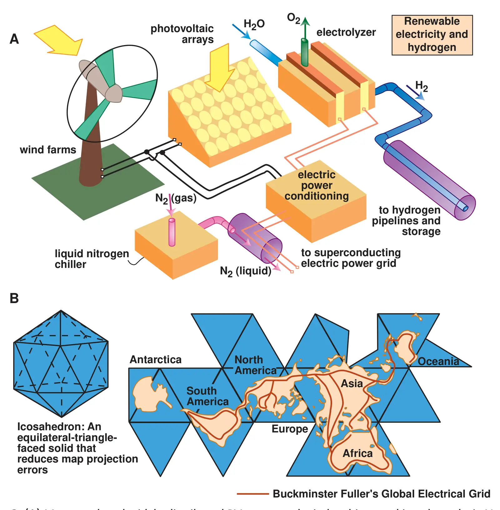

Advanced technology paths to global climate stability — energy for a greenhouse planet
Key finding. Stabilizing the CO2-induced component of climate change is an energy problem: mid-century primary power requirements free of CO2 emissions could be several times what is now derived from fossil fuels, roughly 10^13 watts, even allowing for improvements in energy efficiency — and all candidate technologies surveyed have severe deficiencies limiting their ability to stabilize global climate.

What question did this research address?
Climate stabilization is often discussed as a matter of emission targets. This paper began from the observation that a target is not a mechanism, and that supplying the world with energy that emits no CO2 is the mechanism that any target implies.
It asked what carbon-free primary power would actually be required by mid-century, and surveyed every candidate technology against two tests — can it supply energy at a massive scale, and can it be commercialized at that scale.
What did we find?
The scale of the requirement is the central result. Even with substantial gains in energy efficiency and reductions in end-use demand, carbon-emission-free primary power needed by mid-century could be several times the roughly 10^13 watts currently supplied by fossil fuels.
The candidate primary sources surveyed include terrestrial solar and wind, solar power satellites, biomass, nuclear fission, nuclear fusion, fission-fusion hybrids, and fossil fuels from which the carbon has been sequestered.
Non-primary technologies that could contribute were assessed alongside them — efficiency improvements, hydrogen production, storage and transport, superconducting global electric grids, and geoengineering.
None emerged as ready. Every approach considered carries severe deficiencies that limit its ability to stabilize global climate at the scale required, which is why the paper argues for development effort across the whole set rather than selection among them.
Why does it matter?
Framing stabilization as an energy-supply problem rather than an emissions-accounting problem changes what counts as progress. The binding constraint is the rate at which carbon-free capacity can be built, not the stringency of the target adopted.
The survey also set an agenda. By assessing candidates against scale and commercializability rather than against present cost, it identified which technologies would need decades of development to matter — a judgement that reads very differently two decades on, and is worth revisiting against what wind and solar have since achieved.
Citation, data, and code
Martin I. Hoffert, Ken Caldeira, Gregory Benford, David R. Criswell, Christopher Green, Howard Herzog, Atul K. Jain, Haroon S. Kheshgi, Klaus S. Lackner, John S. Lewis, H. Douglas Lightfoot, Wallace Manheimer, John C. Mankins, Michael E. Mauel, L. John Perkins, Michael E. Schlesinger, Tyler Volk, and Tom M. L. Wigley (2002). Advanced technology paths to global climate stability — energy for a greenhouse planet. Science 298, 981-987.